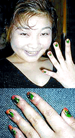
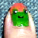
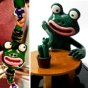
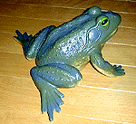

|
 カエルネイルでデートに出発！彼氏のプレゼントをカエルに活用！
【日本発=タカイトモキ同志記者】カエラー暦はけっこう長いと思うのですが、いつからなのかは記憶に無く・・ＨＰも作りたいのですが、どうしていいかわからずで、愛だけが深まるばかり・・・  そんな矢先、彼から誕生日にネイルアートセットを貰いました。これは最初に描くのはもちろんカエルだろう！と、なんとか１０本の指にカエルを住ませたのです・・・
革命的カエルネイルで彼氏もクラクラだあっ！【全国かえる奉賛会】緑色のネイルは、これまでにもみたことがあるが、カエルそのものをネイルアートしてしまうってえのは、初めてである。ネールアートのショップしているカエラーな方々は、今回の、カエル主義的ネイルアートを、広めるために大いに参考にしようではないかあ。全身カエルファッションを大募集！【全国かえる奉賛会】カエルファッションの爆発的流行を促進するため、全国かえる奉賛会では、『ここまで全身カエルずくめファッション』の画像を大募集するぞ！既製品も多数出回っているので、十分可能だと思う。そのうちに、世の中が当たり前にカエルファッションを楽しむ時代が到来したら、ファッション雑誌もカエル系と非カエル系雑誌に分割されるのであろう！カエルNONNOを創刊するぞおお。 バレンタイン・モロー君を一挙分譲開始！ 【東京発=モロー寺井師同志記者】モロー君を毎度ご贔屓にしていただきありがとうございます。毎回売り切れで、ご迷惑をおかけしています。昼夜兼行の増産の結果、なんとかバレンタインデー前の発売にこぎつけました。今回は３体です。かえる新聞の先週号でも紹介された、謎のサボテン美少女発見！、カエルサボテンの製造開始！、を祝賀して、今回は「モローかえるサボテンレスぺクトバージョン」をラインナップしています。 【福岡発=弟子りょーこ様同志記者】モロー君の携帯ストラップ発売が、写真撮影が遅れで一月末になってしまいました。みなさまをお待たせしました。今回は、一挙８体です。どれも、モロー君が可愛いです。師匠のフィギュアと同時発売になりました。
急げ！残数１体に！【福岡発=弟子りょーこ様同志記者】売り出しと同時に、モロー君が、どんどんもらわれていって、うれしいような、さみしいような。。。早くもあと１人になってしまいました。『モロー036号・共産圏万歳！携帯ストラップ！革命的紅少兵赤色スカーフ仕様赤羽根飾り』というとんでもなく長い標題にしてしまいましたあ。 発光リアル鳴きカエルをゲット！
【全国かえる奉賛会】素晴らしいぞ！お腹に青筋みたいなのが出ているのがとってもリアルである。迫力もあるねい。昨日テレビを見ていたら、ヘビを食べるゴライアスカエルが紹介されていた。これからのカエルは迫力も大切だぞお！
このカエル探して！情報を待つ！【福岡発=福岡市在住のかえる同志記者】実は写真に写っている、私の兄弟を探しております。お力になって頂けないでしょうか？見つかった場合カエル好きな方がお持ちでしょうから無理だとは思いますが、養子にしたいのです。
常盤貴子はカエラーかも？！【大分発=しんや同志記者】東芝日曜劇場のビューティフルライフを見ていて杏子(常盤貴子）が車のキーホルダーにかえるの人形をつけているのを確認しました。杏子はカエラーなのかまだわかりませんが今後の展開に注目です。【全国かえる奉賛会】おおー３８パーセント視聴率の怪物番組の主役が、カエル人形つけているなんて。これからは、ドラマのストーリーは、ともかく、常盤さんのキーホルダーだけを見続けるぞ！全国のカエラーは、現場を確認したら、ビデオからキャプチャーした画像を送ってくれええ。 カエル急便のプラモを発見！【福岡発=モローの娘・弟子・りょうこ同志記者】この間トイザラスにいったら、プラモコーナーにてカエル急便のプラモを発見しました！！！ミゼットⅡにカエル急便のステッカーをはるみたいです。サービスでカエル急便ステッカーの大きいものがついてました。ぜひ一度あしを運んでみてください。投稿採用者に武功カエル徽章を授与！ |
かえる古新聞過去に取り上げた記事を見出し付きで一覧したい人は、ここをクリック◆創刊号を見る◆先週号を見る◆話題の号を見る◆かえる新聞の昔を読む
|
私も入っています。。全国かえる奉賛会
大王様に会うには、このバナーをクリック。ずっと奥に写真館があるぞ。全国かえる奉賛会に入会するには、自分のホームページのどこかに、下の部分を追加するとバナーがリンク付きで表示されるぞ。どんどん入会しましょー |


|
 モロー君のフィギュア、携帯ストラップの購入をする人は、イマスグ、
モロー君のフィギュア、携帯ストラップの購入をする人は、イマスグ、